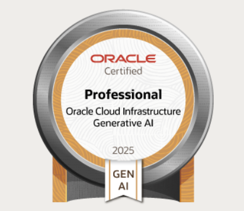

Colegio Adventista Santiago Sur, Santiago
- Científico Humanista HC
Email: contacto@cedrickirmayr.dev
Github LinkediniDEAUFRO | -
En equipo, desarrollamos un asistente virtual basado en IA generativa para la Universidad de La Frontera. Creamos un sistema capaz de responder preguntas frecuentes y asistir a la Vicerrectoría de Investigación y Postgrado (VRIP).
Tecnologías Aplicadas: Python, FastAPI, LlamaIndex, Docker, Angular
Aguas Araucanía
Desarrollé, con un equipo, una plataforma de formación asistida para la Empresa Aguas Araucanía. Me encargué del desarrollo del backend y la integración con modelos de IA generativa para proporcionar asistencia personalizada a los usuarios.
Tecnologías Aplicadas: AWS, LangGraph, Langchain, NestJS, PostgreSQL, Python, TypeScript, Angular
Aguas Araucanía
En equipo, desarrollé una plataforma de consultas asistidas para la Empresa Aguas Araucanía. La plataforma permitía a los empleados responder consultas de clientes de manera eficiente. Durante el proyecto, me enfoqué en el desarrollo del backend y la integración con modelos de IA generativa para mejorar la experiencia del cliente, utilizando conceptos como RAG (Recuperación Aumentada por Generación) para proporcionar respuestas precisas y relevantes.
Tecnologías Aplicadas: AWS, LangGraph, Langchain, NestJS, PostgreSQL, Python, TypeScript, Angular
Aguas Araucanía
Desarrollé, con un equipo, una plataforma de consultas para la Empresa Aguas Araucanía. La aplicación permitía a los ejecutivos obtener información en tiempo real sobre los clientes y sus servicios. Me encargué del desarrollo del backend y la integración con modelos de IA generativa para proporcionar respuestas precisas y relevantes a las consultas de los ejecutivos.
Tecnologías Aplicadas: AWS, LangGraph, Langchain, NestJS, PostgreSQL, Python, TypeScript, Angular
XpertiaLab | -
Plataforma de formación para estudiantes de enseñanza básica y media.
Impartido por Mg. Oscar Ancán | Universidad de La Frontera
Contribui en apoyar y asistir a los estudiantes de la asignatura. Me enfoque en apoyar en despliegue de los proyectos en AWS EC2, ayuda con diseño de diagramas UML y consultas generales de programación.
Segundo semestre 2023
Desarrolle Asistentes Virtuales para clientes como VRIP de la Universidad de La Frontera y Aguas Aracuania. Por otro lado, aporte valor en asistir en otros proyectos del laboratorio, como un gestor documental y acceso por QR
Primer semestre 2025
Desarrolle junto a un equipo, una plataforma de aprendizaje para estudiantes llamada "AprendIA Mappa". Me enfoque principalmente en desarrollar asistentes potenciados por IA Generativa para la creacion de proyectos pedagogicos asistidos por IA. Siguiendo la metodologia de aprendizaje basado en Proyectos(ABP)
Diciembre 2023 - Noviembre 2025
Desarrollo de aplicaciones web para clientes diversos. Implementación de soluciones personalizadas según las necesidades del cliente.

Oracle Cloud Infrastructure Generative AI Professional
Emitido: 01 de noviembre de 2025 - Expira: 01 de noviembre de 2027